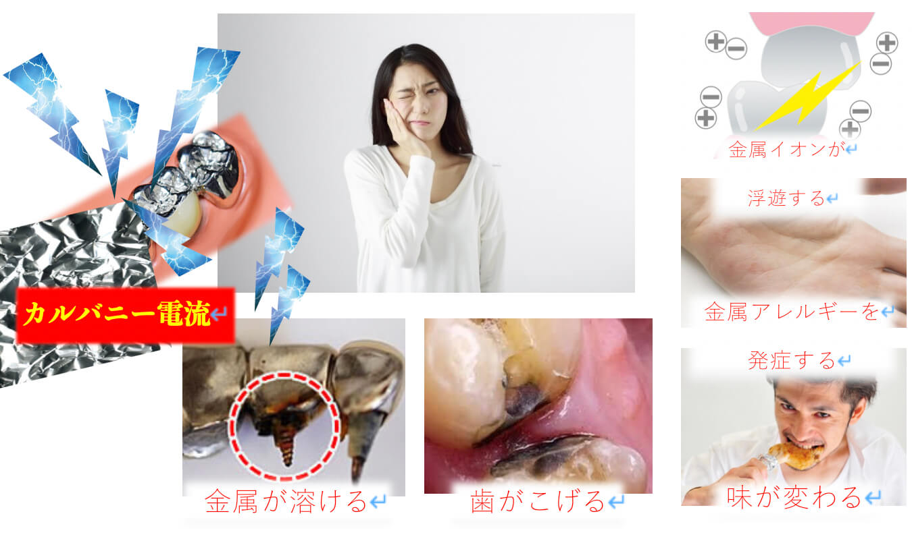

メディケア歯科クリニック下妻の
審美歯科治療ESTHETICS
治療した歯がまた虫歯になってしまうメカニズムってご存知ですか？虫歯を綺麗に取り除いて、金属や白いプラスチックの詰め物で修復して、何年か経過するとまた同じ歯にトラブルが起こって・・・
虫歯になってしまった歯を「キレイに美しく」するための治療法をご紹介します。
虫歯になると
つめものの場合
虫歯になると、そのままにしていても皮膚の傷のように元通りに戻ることはありません。また、治療のためには削らなければならず、削れば穴が空くのでそれを塞ぐ必要があります。塞ぐ方法（治療方法）としては、保険治療と自費治療の２パターンがあります。
保険治療と自費治療の２種類があります
下の歯の金属は話をしていても目立ったしまいます。金属アレルギーがある方は適応ができません。歯と金属の間に隙間が生じやすく、虫歯が再発してしまう事も・・・。
セラミックスの材質は天然の歯の材質と極めて類似しています。だから、歯に優しい、歯茎に優しい身体に優しい詰め物です。身体に優しいからアレルギーのある方でも安心です。長期間経過しても変色することはありません。
被せ物の場合
かぶせものも上記のつめものの場合と同様です。見た目の精神的な負担もさることながら、白い歯を選択される方は見た目のキレイさだったり、銀歯が見えることへの抵抗感で選ばれる方が多いです。でも実際には見た目よりももっと大きな意味があります。
保険治療と自費治療の２種類があります
保険で銀歯にした場合、虫歯と歯周病になりやすいリスクがございます。それだけではなくて、金属の体に与える影響は少なからずございます。また、材質や味といった機能面にも悪影響があります。
セラミックスは天然の歯と材質が似ています。それゆえに、噛み合わせの安定にも優れるし、金属のような味がすることもありません。セラミックスには汚れが付きにくく、歯の周りの歯周組織への影響や、後に虫歯が再発しにくくなると言うメリットもございます。
銀歯のつめものを外して浮き彫りになるう蝕
熱膨張による影響
熱膨張の違いでも隙間を作り、その隙間から虫歯菌が入り込みます。下の表は１℃上がった時にどれだけ伸び縮みするかを調べた熱膨張係数を物質別にまとめた表になります。
エナメル質は歯の表面を覆っているもので、セラミックスの熱膨張がもっとも天然の歯と近い数値を示します。それゆえに隙間もできにくいという特長があります。
コンポジットレジンとは保険の白いプラスチックの詰め物のことです。これほどまでに熱膨張係数に違い過ぎれば、微細な隙間ができてしまうことは避けられません。それゆえに虫歯が再発するリスクが高まるのです。
銀歯と熱膨張係数が異なるため、温度による膨張や収縮により隙間ができ、セメントが流れ出て二次う蝕になる。コンポジットレジンにしても銀歯にしても保険で認められているものがそれしかないのが、現在の実態です。
熱膨張以外の要因
熱膨張以外にも隙間になる要素は様々あります。その一例としては、被せ物の適合が不十分のケースです。隙間ができれば虫歯菌に蝕まれることは避けられません。
金属の表面には見えない小さな傷がたくさんあり、その傷の中に細菌が溜まっています。結果として歯周病も進行させ、虫歯にもなりやすいです。
金属アレルギー
歯科で使う金属の体への弊害をご存知でしょうか？
金属アレルギーに関しても、自覚症状がないとさほど気にしないかもしれませんが、アレルギーは大半の人が持っています。その発症のレベルが個々で異なるだけで全員に関係があります。誰しもが急にアレルギー症状を自覚できるレベルにまでなってしまうことは否定できません。
口の中に電流が走る
口の中に金属が入っているからこそ、起きてしまう現象があります。
スプーンやアルミホイルを噛んだとき、ピリッと嫌な痛みが走ることがあります。口の中で金属から溶け出したイオンが微弱な電流を発生するとといったものです。それをカルバニー電流という呼びます。

錆びてしまった金属が二次う蝕を起こす
保険診療で使用している金属は貴金属ではない合金であるため、酸化して錆びやすくなります。錆びが口の中にあるとどうなるのでしょうか？
サビは活性酸素と関係があり、ガン、糖尿病、心臓病、肝臓病、その他の老化現象に影響することが現代の医学で解明されています。
体内の有害毒物を排出する

デトックスって言葉をよく耳にするかと思います。デトックスとは、体内に溜まった有害な毒物を排出させることです。
サプリや漢方薬などもあるようですが、ジムに行って身体動かしたり、サウナや岩盤浴で汗を流したり・・・食べ物もこだわる方は無農薬野菜や有機野菜、無添加食品といったものを選んで購入しますよね。
ところが、口の中に金属が入っていれば、それ自体が毒性を持つものなので、上記のようなデトックスの努力は意味をなしません。体に優しい治療法として、金属を使わないノンメタル治療を希望される方が増えてきています。ノンメタル治療とは金属を使わない治療のことで、セラミックスをメインに使用いたします。金属でも金やプラチナといった貴金属は毒性が極めて弱いですが、結果として材料費が高いのでセラミックスの方が主材質になります。
セラミックス
オールセラミックスクラウン
審美的な治療を行う上で最上級のものがこちらのオールセラミックスです。その理由は、元々あった健康は状態の歯を再現することができるということです。
また、天然の歯と同様に透明性を再現することができるのでより自然に近くなるので一見しただけではそれが作り物であることはわからないです。時間が過ぎても変色をしないので、プラスチックの歯のように「いわゆる差し歯」のような濁ったものにはなりません。
セラミックインレー
金属は体にとってアレルギーを引き起こす可能性のあるものです。言ってみれば、体にとっては異物であることには違いありません。ただし、今の日本の保険制度では虫歯を修復するときに金属もしくはコンポジットレジンというプラスチックしか認められていません。
また、体にとって優しい素材というのは、体に近い材質でもあります。歯の表面は「エナメル質」という組織で覆われており、セラミックスとほぼ同じ材質です。
セラミックの種類
ジルコニアプレミアム
土台部分にジルコニアを使い表面にセラミックスを焼付けた美しい冠です
| 色調調和度 | ☆☆☆☆☆ |
|---|---|
| 生体親和性 | ☆☆☆☆☆ |
| 強度耐久性 | ☆☆☆☆☆ |
| 特徴 | 色・透明性が優れている |
| 費用 | 120,000円 |
ジルコニアSハイトランス
全てジルコニアで作られた冠で透明度の高いジルコニアを使います
| 色調調和度 | ☆☆☆☆ |
|---|---|
| 生体親和性 | ☆☆☆☆ |
| 強度耐久性 | ☆☆☆☆☆ |
| 特徴 | 自然な色合いで、強度がある |
| 費用 | 100,000円 |
ジルコニアハイトランス
全てジルコニアで作られた冠で表面に色調を塗ります
| 色調調和度 | ☆☆☆ |
|---|---|
| 生体親和性 | ☆☆☆☆ |
| 強度耐久性 | ☆☆☆☆☆ |
| 特徴 | 上顎奥歯の単冠やブリッジでも使用可能 |
| 費用 | 80,000円 |
e-max
セラミックスのみで作られ色調の美しい冠です
| 色調調和度 | ☆☆☆☆☆ |
|---|---|
| 生体親和性 | ☆☆☆☆ |
| 強度耐久性 | ☆☆☆☆ |
| 特徴 | 小臼歯から単冠やまででブリッジは不可 |
| 費用 | 90,000円 |
メタルボンド
金属の土台にセラミックスを焼付け他た冠です
| 色調調和度 | ☆☆☆ |
|---|---|
| 生体親和性 | ☆☆ |
| 強度耐久性 | ☆☆☆ |
| 特徴 | 歯茎が黒ずむこともある |
| 費用 | 95,000円 |
まずはご相談ください
私達は患者様からお口の健康を任せていただけるように、頼りがいのある歯科医院を目指しています。お口のトラブルがございましたら、お気軽にご相談ください。